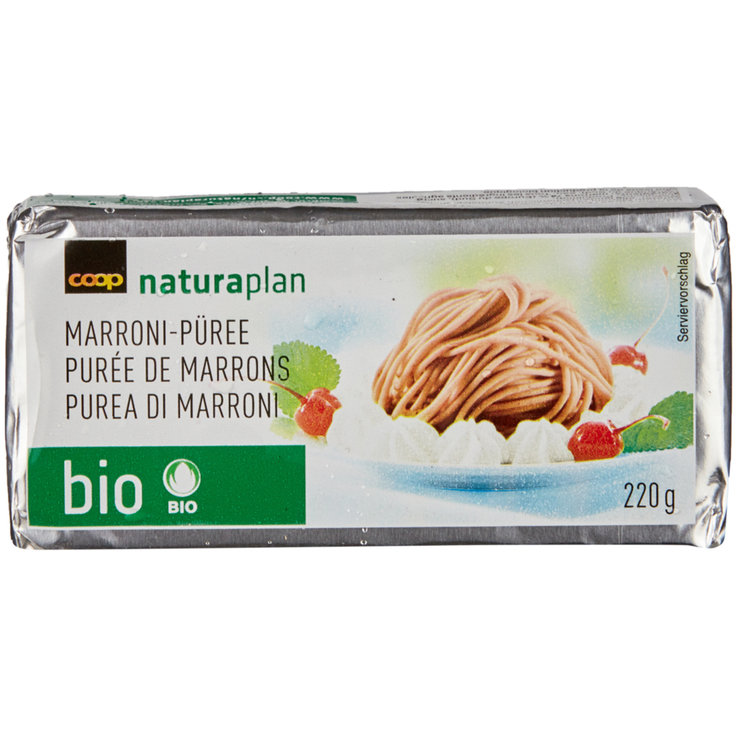

Chestnut Cake
Yields: a cake for 8
Preparation time: 10'
Cooking time: 35'
Tools
-
Static oven (180°C)
Ingredients
-
440g of frozen Marroni (Chestnut) paste. Read the notes below if you can’t find it.125g butter100g caster sugar7g of vanilla sugar or vanilla extract4 eggs
Directions
-
Take the butter out of the fridge and the chestnut paste out of the freezer 30’ before startingPre-heat oven to 180°C[OPTIONAL] for extra fluffiness separate the egg whites and whisk them to stiff peaksMix the rest of the ingredients togetherCarefully incorporate the egg whites trying to not push out too much airPut in a cake tin with baking paper in itBake for 30’ to 40’ minutes at 180°C or until the top starts cracking a bit in the center
How simple can it be?
This recipe can be simplified to literally be “mix all together; bake”.
About the Chestnut paste
This is not easy to come by outside of Switzerland but it is a 74% boiled chestnuts 26% sugar mix, so I think this should be fairly easy to make at home (but I haven’t tried).
This is how the ingredient I use looks like: 
Category: Sweets
Origin: Swiss
-